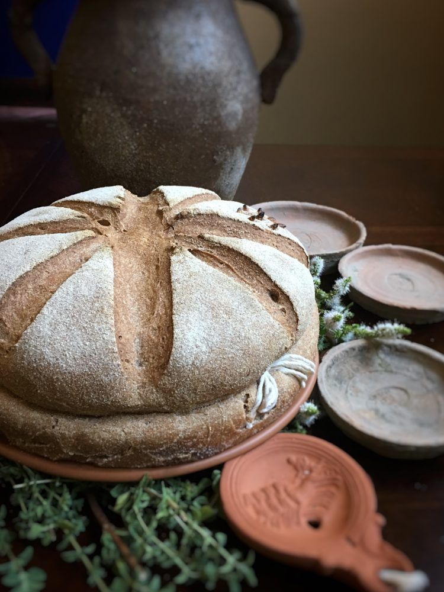
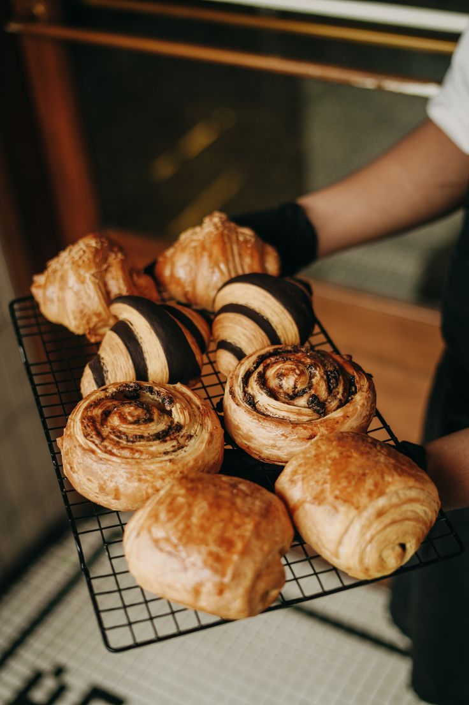
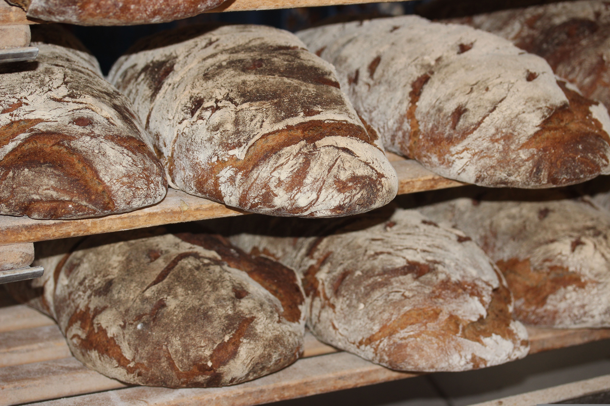
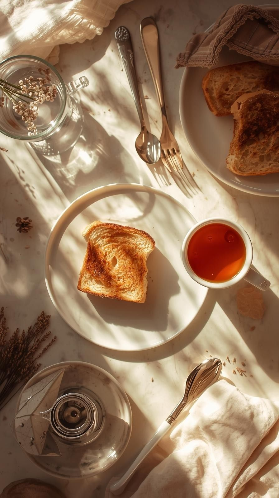

O Alimento Mais Antigo da Humanidade
O pão acompanha a trajetória humana há mais de 10 mil anos. Muito antes da escrita ou das grandes civilizações, a descoberta de misturar grãos moídos com água e assar essa massa transformou a nossa relação com a comida e viabilizou a fixação do ser humano na terra.

A Pré-História e os Pães Primitivos
Os Primeiros Registros
Evidências arqueológicas mostram que, bem antes da agricultura formal, povos coletores na Europa e no Oriente Médio já trituravam raízes e grãos silvestres para fazer uma papa cozida sobre pedras quentes.
O Pão Ázimo
Com a Revolução Neolítica (cerca de 10.000 a.C.), o cultivo de cereais como trigo e cevada deu origem aos primeiros pães planos e sem fermento (flatbreads), que eram duros, duráveis e serviam de base energética para comunidades nômades e agrícolas.


A Revolução do Fermento no Antigo Egito
O grande marco da panificação ocorreu por volta de 4.000 a.C. no Antigo Egito, transformando a textura e o significado cultural do pão.
- ✓ A descoberta casual: Uma massa de água e farinha foi esquecida ao ar livre e entrou em contato com leveduras do ambiente, fermentando e crescendo.
- ✓ Leveza e sabor: Ao assar a massa fermentada, os egípcios perceberam que o pão ficava incrivelmente macio, leve e saboroso.
- ✓ Valor social: No Egito, o pão era tão valioso que funcionava como moeda de troca, sendo usado para pagar salários de trabalhadores e operários.
Da Antiguidade Clássica à Idade Média
Grécia e Roma
Os gregos transformaram a panificação em arte, criando dezenas de variedades. Em Roma, o pão ganhou apoio estatal: surgiram as primeiras padarias públicas e escolas de panificação, fundamentais para alimentar a população urbana e as tropas do Império.
Idade Média
Com a queda do Império Romano, as grandes padarias desapareceram e a produção voltou a ser doméstica e rústica, associada aos mosteiros. O pão escuro (centeio/cevada) virou base dos camponeses, enquanto o pão branco era reservado à nobreza.
A Era Moderna e a Industrialização
A sofisticação francesa
A partir do século XVII, a França destacou-se no aprimoramento de técnicas que culminaram, séculos mais tarde, na criação de ícones mundiais como a clássica baguete.
A Industrialização
No século XIX, a Revolução Industrial introduziu fornos modernos, moinhos a vapor e máquinas de amassar, permitindo a produção em larga escala e transformando o pão no produto acessível padronizado de hoje.
